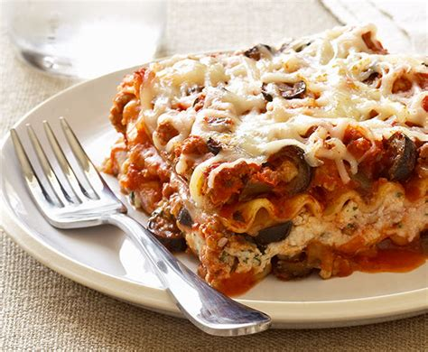

Eggplant and Goat Cheese Lasagna

Description
For all of you eggplant-lovers out there, how could you not have eggplant
and goat cheese in your lasagna! Twice as delicious, and as twice as
flavorful, this mouth-watering take on lasagna will get you coming for
more!
Ingredients
- cooking spray
- 1 large eggplant, sliced into 1/4 inch rounds
- 1 (28 ounce) jar garden vegetable pasta sauce
- 1 (11 ounce) log goat cheese, sliced
Steps
- Preheat oven to 350 degrees F (175 degrees C).
- Spray a 9x13-inch baking dish with cooking spray.
-
Arrange one fourth of eggplant slices in a layer in the bottom of the
dish.
- Pour one fourth of pasta sauce on top of eggplant layer.
- Dot pasta sauce layer with one fourth of goat cheese slices.
-
Repeat layers three more times with remaining ingredients, ending with a
top layer of goat cheese.
-
Bake in preheated oven until pasta sauce is bubbling and goat cheese is
melted, 45 to 60 minutes.